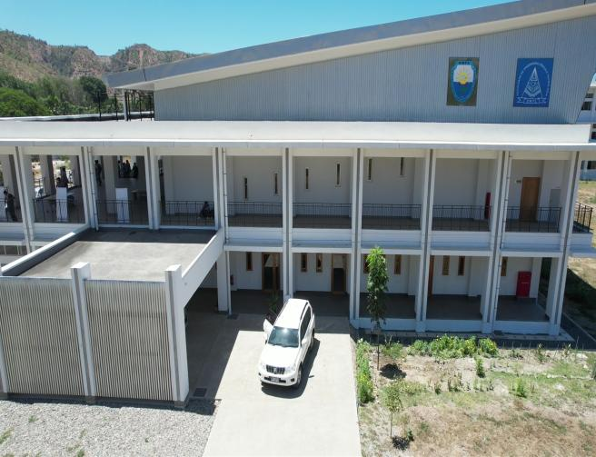

BREVE HISTÓRIA DE FACULDADE DE ENGENHARIA

BREVE HISTÓRIA
A mudança política em Timor-Leste modificou o sistema de ensino do governo indonésio em todos sectores, incluindo o sector do ensino politécnico em Dili. (Programa de Diploma II). Nos utilizámos dez anos do governo da Indonésia, o estado e o povo Timorense deram grande importância a este sector, construíram belos e magníficos edifícios para a preparação técnica dos timorenses, mas hoje só restam cinzas.
Esta Situação causou-nos tristezas e amarguras. Nós sempre acompanhámos a obra de construção porque ela nos dava a esperança para a formação técnica. Deste modo, demos grande apoio à criação deste departamento na Faculdade Técnica e à criação da programa de Diploma III na Universidade Nacional de Timor Lorosa'e. As actividades foram iniciadas no dia 17 de outubro de 2000. Estamos conscientes de que ainda temos problemas muitos importantes para resolver. Entretanto, temos fé que conseguiremos, em colaboração com UNTL, criar um sistema de educação técnica mais modernizado.